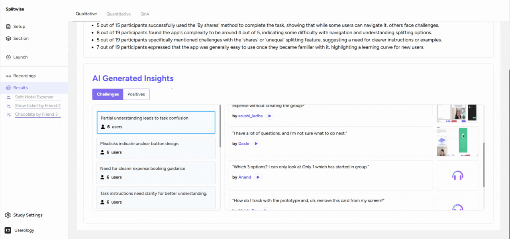

AI Overview
The AI Overview provides a snapshot of your entire study. It includes information about all the participants and the overall study results. For instance, it might indicate how many participants successfully completed a task without major issues, offering a quick assessment of the process's effectiveness.

AI-Generated Insights
As you scroll down, you will find AI-generated insights categorized into challenges and positives.
These insights represent the experiences of the participants throughout the tasks.
1. Challenges
These are the obstacles faced by the participants, such as misclicks or the need for clearer instructions. By selecting a specific challenge, you can access participant quotes and recordings related to that issue. To return to the previous screen, simply press the back button.
2. Positives
Similarly, you can explore the positive experiences of the participants. This section highlights what worked well during the tasks.

Task-Level Data
To get more granular data, you can select the sub-tabs under the Results tab. This will provide similar insights but at a task level. This feature allows you to analyze each task's performance individually, offering a more detailed understanding of your study's results.
If you need further help, please email us at support@userology.co